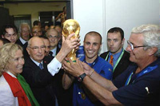

| ПРИВЕТ УЧАСТНИКАМ СОРЕВНОВАНИЙ! | |
Виды спорта |
ФУТБОЛ
Футбол — командный вид спорта, в котором целью является забить мяч
в ворота соперника ногами или другими частями тела (кроме рук) большее количество раз, чем
команда соперника. |
| ГЛАВНОЕ НЕ ПОБЕДА, А УЧАСТИЕ! | |